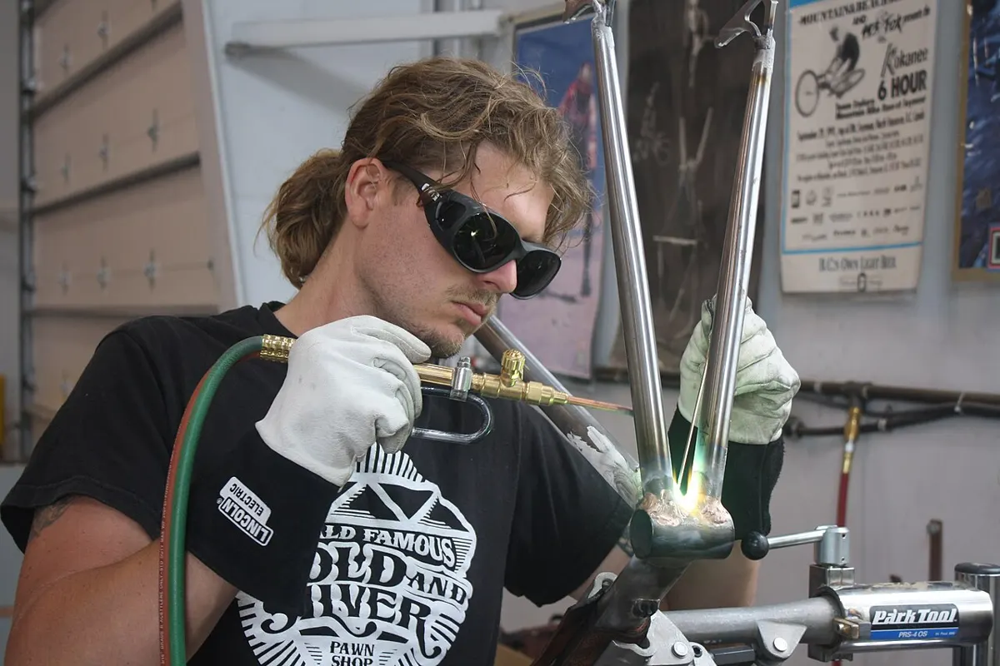
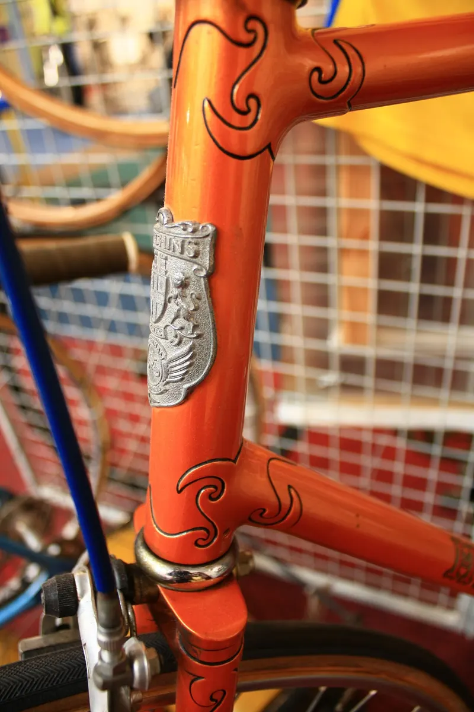
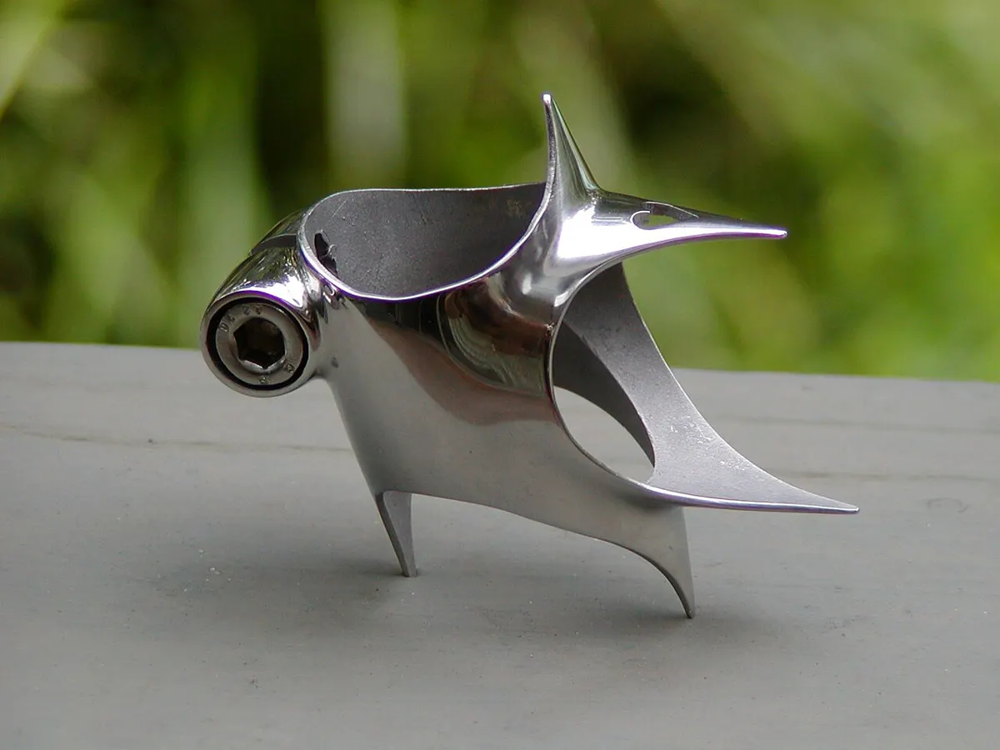
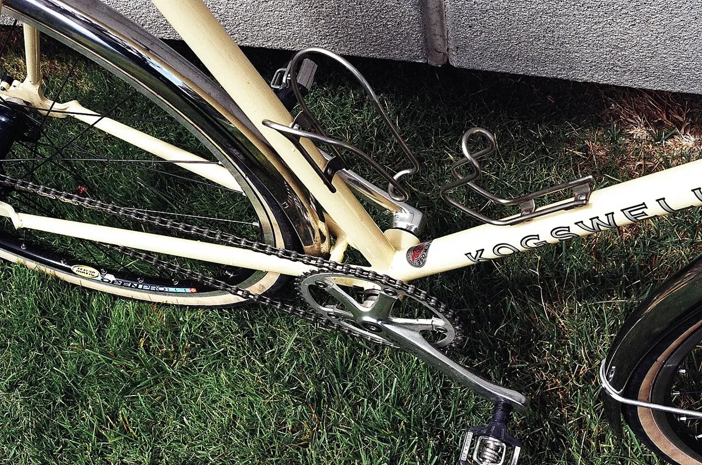
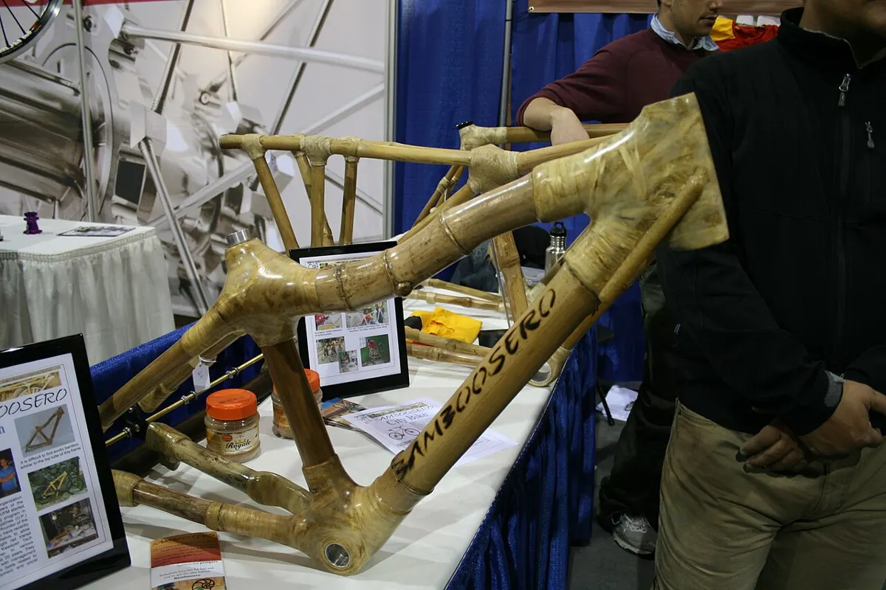

Как делают рамы: сталь, алюминий, титан, карбон, бамбук
Изготовление рамы — отдельное ремесло. Ниже — обзор основных технологий, чтобы понимать, из чего и как сделан ваш велосипед и с чего начать, если хочется построить раму самому.


Стальные рамы на муфтах (lugged)
Трубы вставляются в фигурные муфты (lugs) и паяются твёрдым припоем — латунным или серебряным — при помощи горелки. Пайка идёт при температуре ниже точки плавления стали, поэтому трубы не перегреваются. Это классическая технология; ей пользуются мастера-рамостроители по всему миру.

Пайка без муфт (fillet brazing)
Трубы стыкуются напрямую, а стык формируется валиком латунного припоя, который затем обрабатывают до плавной формы. Позволяет делать любые углы без готовых муфт.
Сварка TIG
Аргонодуговая сварка неплавящимся электродом (TIG) — самый распространённый способ соединения стальных, алюминиевых и титановых труб. Алюминиевые рамы после сварки обычно подвергают термообработке, чтобы восстановить прочность сплава; титан сваривают в защитной атмосфере аргона.

Трубы
- Известные производители трубных наборов — Reynolds (Великобритания; знаменитая серия 531 появилась в 1935 году), Columbus (Италия), Tange (Япония), Kaisei (Япония) и другие.
- Трубы с переменной толщиной стенки (butted) толще на концах, где выше нагрузка, и тоньше в середине — так рама легче.
Карбон
Углепластиковые рамы делают из слоёв углеродной ткани, пропитанной смолой, с формованием в пресс-формах (монокок) или соединением труб. Это промышленная технология; ремонт карбоновой рамы выполняют специализированные мастерские.
Бамбук
Бамбуковые рамы — реальная технология: трубы из выдержанного бамбука соединяются узлами из волокна (лён, конопля, углеродное волокно), пропитанного смолой. Металлическими остаются рулевой стакан, корпус каретки и дропауты. Есть курсы и мастерские, где можно собрать такую раму самому.

Что нужно, чтобы построить раму самому
- Чертёж геометрии (stack, reach, углы, длины) — см. схему геометрии.
- Стапель (jig) для фиксации труб, инструмент для подготовки торцов («рыбья пасть»), горелка или сварочный аппарат.
- Готовые дропауты, рулевой стакан и корпус каретки нужного стандарта (стандарты кареток, колонок).
- Обучение: курсы рамостроения у мастеров. Самодельная рама должна быть проверена перед ездой по дорогам.